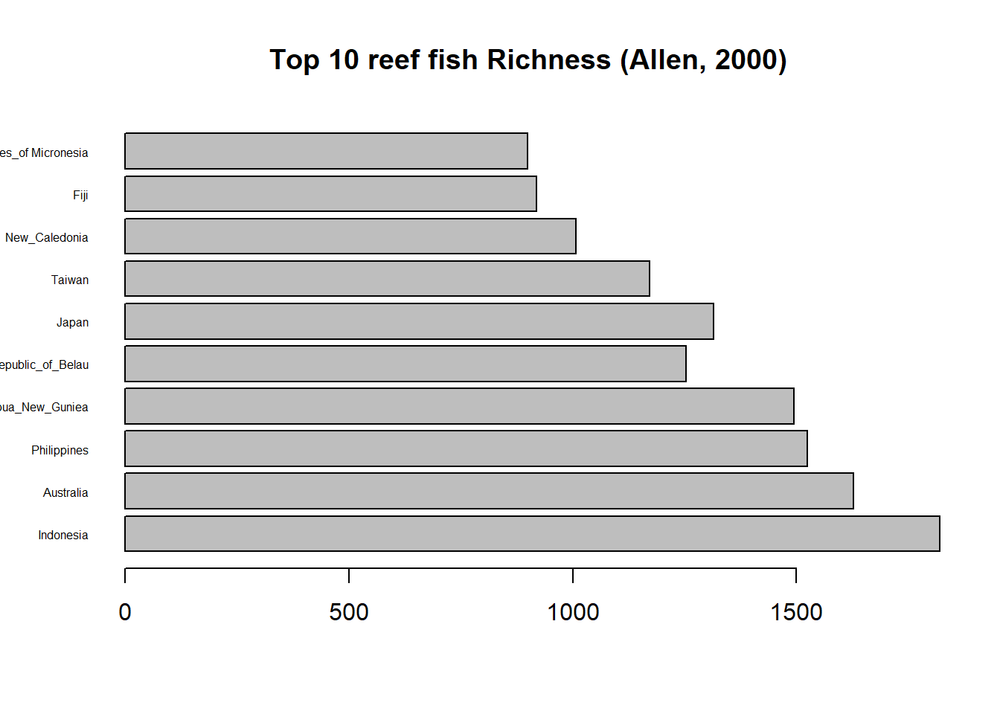

R is a popular free and open program for statistical computing (https://www.r-project.org/about.html). R is a widely-used program for statistical computing. R can be run from the command line or from a graphical user interface (GUI) that is automatically installed when you install R (if you open the R program installed on your computer, this is what will open up).
R consists of a core (minimal installation + add on packages (from the Comprehensive R Archive Network [CRAN], Bioconductor, or others). The core’s capabilities is expanded by using the add-on packages.
If you don’t have R installed on your computer:
.exe file that was just downloaded.DO NOT INSTALL R OR LATER SOFTWARES ON YOUR DESKTOP. ACCEPT DEFAULT OTHERWISE I WILL NOT BE ABLE TO HELP YOU
If you already have R already install:
To check the version of R you are using, start R: the version of R
you are running is the first thing that appears on the terminal.
Alternatively, Type sessionInfo() in the R console, which
will display which version of R you are running. Go on the CRAN website and check whether a
more recent version is available. If so, please download and install it.
You can check here
for more information on how to remove old versions from your system if
you wish to do so.
(note: I am not using mac, so help me to update this section if you see something has changed - thank you)
If you don’t have R installed on your computer:
.pkg file for the latest R version.If you already have R already install:
To check the version of R you are using, start R: the version of R
you are running is the first thing that appears on the terminal.
Alternatively, Type sessionInfo() in the R console, which
will display which version of R you are running. Go on the CRAN website and check
whether a more recent version is available. If so, please download and
install it.
(note: I am not using linux, so help me to update this section if you see something has changed - thank you)
Follow the instructions for your distribution from CRAN, they provide information to get the most recent version of R for common distributions.
Once it’s installed, open R to make sure it works and you don’t get any error messages.
NOTE: the entire course is prepared using R for windows version. Despite most of the code provided will work on any versions, slight differences may cause trouble when we will deal with animation and 3D visualizations.
If you already have R on your computer, an alternative is to run the following line of code in R native GUI (it will tell you if your R version is out-of-date ):
# R update (to run in R native GUI only)
if (!require(installr)) {
install.packages("installr")
require(installr)
}
updateR()This will start the updating process of your R installation. It will check for newer versions, and if one is available, it will guide you through the decisions you need to make.
You may have to choose a CRAN mirror if it is your first download. A mirror is just a copy of the CRAN archives. Choose one in Taiwan, it is usually a bit faster to download and install.
To expand the abilities of R, you can first install a package with
its name. The package ABC provides extra tools
(functions) for Approximate Bayesian Computation
(ABC)
abc. To do only once.# function are case sensitive
# all information after `#` is ignored
# it is call a comment. Commenting is very important Happily, only basic packages are loaded when you started R. Other are inactive and you need to activate them. Once installed on your computer, you need to say that you want to use a specific package.
abc.To do every time you wanna use the
package.
Practice 1.1 The vegan package provides
tools for descriptive community ecology. It has most basic functions of
diversity analysis, community ordination and dissimilarity analysis.
Most of its multivariate tools can be used for other data types as well,
not restricted to ecological purpose.Install and load the package
vegan.
If you don’t know the name of a package relevant for you analyses:
use task views available at http://cran.r-project.org/web/views. It group packages to subject areas such environmetrics, multivariate, etc.
use online discussion, forum, and docs. Among many others sources, you will often be directed to discussion in stackoverflow
You don’t know: relax! You can access .html help via the ‘Help’ menu: Help/Search help. Alternatively, a faster solution is to call for help directly in the R console. You can get:
mean## function (x, na.rm = FALSE, ...)
## UseMethod("median")
## <bytecode: 0x000001e64fe5f4d8>
## <environment: namespace:stats>median
which will send you to an .html webpage.It is a good practice to create a working directory (folder) where you will store all your file. In general, each project will have its own working directory including data set, script, plot, etc.
You wanna change for a specific folder. Set it up using:
R is a calculator:
# Use R as a calculator
3+2 # addition
3-2 # substraction
3*2 # multiplication
3/2 # division
3^3 # power
log(2) # logarithm
exp(2) # exponential
(5 + 3) / 4 # define priority using () or {}
pi*4 # common functionR is case sensitive pi will work, whereasPi
will not
The list function ls() will provide you with all the
objects in the memory.
## [1] "arranged1" "arranged2" "colors" "f" "females" "filtered1" "filtered2" "gp" "gp.mean" "iris" "mutated1" "selection1" "selection2"
## [14] "selection3" "sf" "students" "summarised"# I create and list 3 objects
a<-'corals' # create an object 'a' containing 'corals'
b<-'are' # create an object 'b' containing 'are'
c<-'cool'# create an object 'c' containing 'cool'
ls() # list objects 'a', 'b', 'c'## [1] "a" "arranged1" "arranged2" "b" "c" "colors" "f" "females" "filtered1" "filtered2" "gp" "gp.mean" "iris"
## [14] "mutated1" "selection1" "selection2" "selection3" "sf" "students" "summarised"Note: two operators <- and
= can be used to import data. While longer, I favor
<- in the creation of object to avoid confusion with
mathematical operator
You can clean rm (remove) the objects list
in memory ls() using:
Tip: The use of CTRL+L cleans your screen when you want to make it clearer. However, it does not remove the objects in memory.
To be able to work with a dataset (and make calculation based on it), it has to be import as an object in the memory of R. Many formats can be used (.xls, .spss, SAS, etc.). To start with, we will use and .xlsx file, but quickly we will turn toward less ‘heavy’ format. Note the distinction between reading a file and importing a file.
My file reef_fish is an .xlsx file located in the file
‘Data’ of my working directory.
# 1. using the package `readxl`
# 2. reading my `reef_fish.xlsx` in my working directory
# 3. importing `reef_fish.xlsx` in a `fish` object
library(readxl) # load the package `readxl'## Warning: package 'readxl' was built under R version 4.3.0## # A tibble: 10 × 2
## country richness
## <chr> <dbl>
## 1 Indonesia 1820
## 2 Australia 1627
## 3 Philippines 1525
## 4 Papua_New_Guniea 1494
## 5 Republic_of_Belau 1254
## 6 Japan 1315
## 7 Taiwan 1172
## 8 New_Caledonia 1007
## 9 Fiji 919
## 10 Federated_States_of Micronesia 900fish<-read_excel('data/reef_fish.xlsx') # store my table in an object called `fish`
fish # print my object `fish` ## # A tibble: 10 × 2
## country richness
## <chr> <dbl>
## 1 Indonesia 1820
## 2 Australia 1627
## 3 Philippines 1525
## 4 Papua_New_Guniea 1494
## 5 Republic_of_Belau 1254
## 6 Japan 1315
## 7 Taiwan 1172
## 8 New_Caledonia 1007
## 9 Fiji 919
## 10 Federated_States_of Micronesia 900More commonly, we will use .txt file (lighter) and the function `read.table’. But often you will need to think at several important arguments about the file you wanna to import:
Check ?read.table for all arguments you can specify
within this function
It is not a good practice, but instead or working within a working directory, you can also target directly your file (check your file properties) or an url.
# import file by path name
fish <- read.table("D:/.../data/reef_fish.txt", header = TRUE, sep = "\t", dec = ".") # long version
fish <- read.table("D:/.../data/reef_fish.txt", TRUE, "\t", ".") # short versionYou can also use `file.choose()’ to locate directly the file on computer
Note: every time we created the object
fish it replaced the one previously created.
Practice 1.2 Download reef_fish.xlsx, save
it in a working directory you dedicated for this course, and import it
in R. Do the same after converting this reef_fish file into
a .txt format
You can start to feel it quickly becomes hard to manage the copy and paste + edit the function in the R GUI. It starts to be interesting to have an script editor to edit our code. It will help at saving and running efficiently our code in R. Many alternatives exist from opening a simple.txt file, opening an new script window directly in R, or using a dedicated script editor. The latest one is the most common alternative.
RStudio (now Posit) is a graphical integrated development environment (IDE) that makes using R much easier and more interactive. It is open source (i.e. free) and available at https://posit.co/. Have a look at this presentation of the product
Important note: RStudio became Posit in October 2022 for better ‘embracing multi-lingual data science’ - such as Python lnaguage that you can use in RStudio. Explore it here and follow the transition.
If you don’t have RStudio installed on your computer:
If you already have R already install:
RStudio combines (File>New File>R Script):
A Script editor window where you can edit and send you commands to the console
A Console is where you can type commands and see the output
A Workspace shows all the active objects. The history tab shows a list of commands used so far.
The Files tab shows all the files and folder in your default workspace. The Plots tab will show all your graphs. The Packages tab will list a series of packages or add-ons needed to run certain processes. For additional info see the Help tab.
Among the many advantages of RStudio, you will appreciate the
user-adjustable interface (see
Options>Appearance>Layout), the auto-synthax, the
suggestion function {package} together a brief description
of its use.
Again using our fish data set, we can write a script to
import the data set as an object fish and create a very
simple plot to visualize difference of reef fish richness by
country.
# import data set and create an object in R studio + simple plot
fish<-read.table('Data/reef_fish.txt', header=T, sep='\t', dec='.')
barplot(fish$richness, main="Top 10 reef fish Richness (Allen, 2000)", horiz=TRUE, names.arg=fish$country, cex.names=0.5, las=1)
Note 1: using the options in R studio, you can
easily export the resulting plot as and image, a pdf, or to copy it to
your clipboard.
Note 2: you can do many many many things using RStudio,
and we will just visit the tip of the iceberg together.
Download environment.Rmd available on the top of your screen and open it using RStudio. This is a R markdown file. R markdown is text-based formatting that allows you to embed code and explanatory text in the same document.R markdown documents consist of a header, code chunks and text. R markdown files (.Rmd) can be rendered to other document formats (e.g. html, pdf, docx) to generate reports or web applications.Formatting analyses in R markdown keeps the entire research process in one document that can easily regenerate reports and output if the data are changed.For example, the course website is a set of R markdown files that have been rendered to html files and are hosted on an online repository: https://github.com/vianneydenis/OCEAN5098.git
Visit R markdown webpage for an overview of its capability. Download cheat sheet to get familiar with it. I also recommend you the R markdown bible: Xie et al. (2020), available here to become an expert with markdown.
BEGINNER In order to
understand its multiple advantages, simply go to File>New
File>R Markdown in RStudio. Give your document a title
test. Select HTML Output. Knit
the document create, and save it as test to visualize it.
Make sure you are in your working directory. The options ⚙ should allow
you to ‘Preview in Window’ or to ‘Preview in viewer Panel’. Try to
modify and play with it with the information available in the cheat
sheets you downloaded.
ADVANCED On the top
of this Environment page, you download a
environment.Rmd. By knitting it in RStudio, you should be able
to render this .Rmd as html page similar to
the present webpage. This entire website is built using RStudio, so the
page may look a bit different - yet you should get something :) In order
for it to work you would have to: (1) install ALL the
packages used in this .Rmd (knitr,
xfun, abc, vegan,
readxl, formatR, etc.) (2) make sure to have
in your working directory a file called Data where you
will have downloaded reef_fish.xlsx and generated
reef_fish.txt (tip: see practice 1.2).
EXPERT This repository available on GitHub is the working directory of the OCEAN5098.Rproj file and it contains all of the .Rmd, .html and data files used to review this course. While you can can individually download and render the .Rmd files. It is better to fork this repository to your GitHub account, then clone a copy of this forked repository (from your own Github account to your computer). It requires advanced understanding on several aspects of R, RStudio, and R Markdown but you may be adventurous and give it a try. This will take some time.
The Git system is designed to make collaboration easier and more transparent. This section provides an introduction to the version control system Git, one central sharing point called GitHub, and how you can use the two in RStudio. You will need a bit of time to get use to it, but the best way to work with R is a version control and using online repositories. You can first install Git on your machine, create an account on GitHub and create a first repository that you will later use connected with RStudio. Below is some explanation on how to do:
WATCH the series of videos available here.
Follow this tutorial and in the right rder. This is an excellent
tutorial to set up Git on your computer and then connect RStudio with
GitHub with the help of the package usethis. Depending on
the system, you may expericence some bugs. It happens, and
troubleshooting is necessary. Below are some websites to help you:
See instructions in video tutorial above.
Simply open an account
Two options, RStudio first or GitHub first. Personally, I generally using the GitHub first solution but try to be familiar with both.
Once you project is connected:
Any changes you make in your project will appear in ‘Git’.
Changes needs to be ‘commit’ (prepared to git, local) and ‘push’
(uploaded) to GitHub in order to be synchronized. You can use command
line: git add ., git commit -m 'initial commit
and git push
Changes in your GitHub repo must be ‘pull’ prior working on your project in RStudio.
⚠ Practice 1.3 The goal is to generate an .Rmd and “communicate” with GitHub. Complete ADVANCED (see above). In RStudio, try to move both the .Rmd and .html files to a public repository accessible via your (newly created) Github account. Do not upload the files directly to GitHub, it’s useless and remember that you could be picked up for a demo next week. Send the address (URL) of this repository (e.g. https://github.com/vianneydenis/OCEAN5098B.git) to [vianneydenis@g.ntu.edu.tw] before next Monday so that your work can be reviewed. If you cannot ‘push’ your files, you can also send them directly to me as an attachment - but try before giving up. The title of your email should be `Practice 1.3 (your name: your student number). It will be a challenge, but once you have completed it, you will have mastered important functionalities of the R environment. Have fun ;)
Content derived from Fukami T. & Coyle J. (Standford University) derived itself from Data Carpentry and Software Carpentry materials (Copyright (c) Data Carpentry) under CC-3.0 Attribution License (see http://creativecommons.org/licenses/by/3.0/).